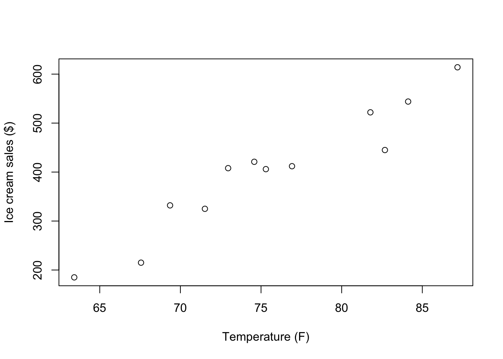
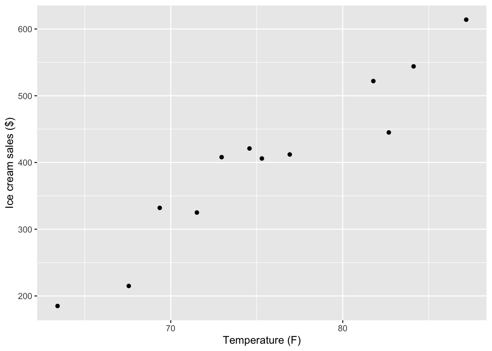
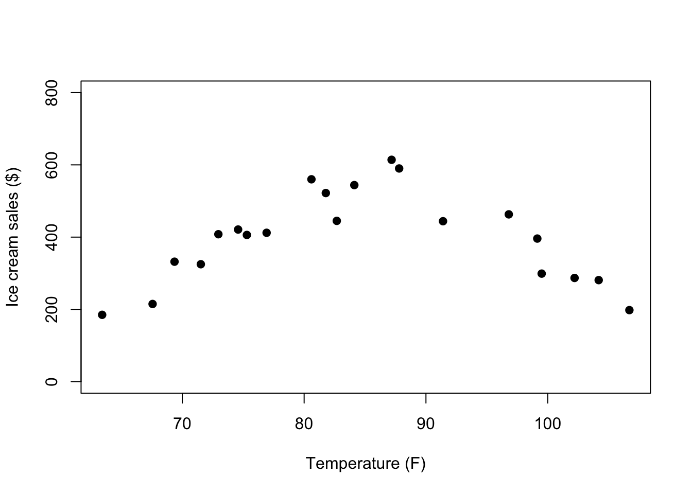
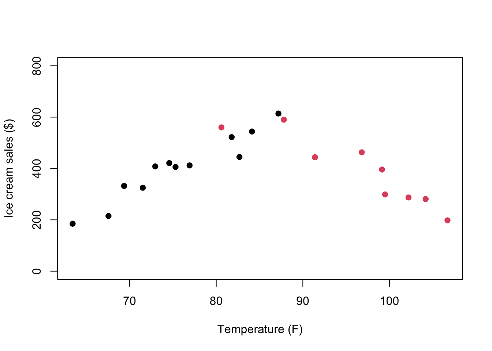
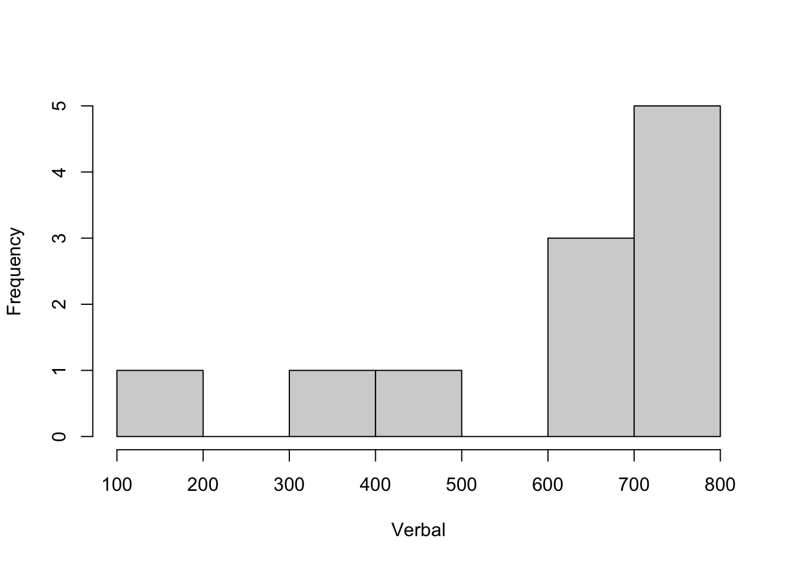
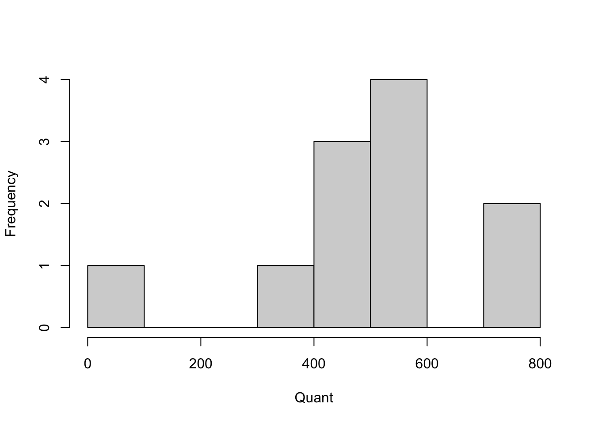

library(rio)
library(psych)
library(ggplot2)
library(correlation)2 Correlations
Note
You can download the R code used in this lab by right-clicking this link and selecting “Save Link As…” in the drop-down menu: correlations.R
2.1 Loading R Packages
If you want to use the functionality of a package, you will need to “load” the package into your environment. To do that, we use the library function:
2.2 Loading Data
You can download the data by right-clicking this link and selecting “Save Link As…” in the drop-down menu: data/tempice.csv. Make sure to save it in the folder you are using for this class.
Typically, you will import some data file into your R environment for further analysis. There are many ways of doing this. I will show you two:
- You can use a point-and-click approach by clicking the
Import Datasetbutton in the right-top window. - You can use a function (the one we use is from the
riopackage).
tempice <- import(file = "data/tempice.csv")The function above will attempt to import the file tempice.csv from a folder called data, which is located inside your working directory.
Sometimes, running the code above doesn’t work because R thinks you want to import the data from the wrong folder (which R calls the working directory). We can check what the working directory is:
getwd()If the result of this function is not the folder containing your data file, then you can change the working directory in two ways:
- Use a point-and-click approach by moving your cursor to the bottom-right window to navigate to the correct folder (in the Files tab).
- Use the following R function to change the working directory:
# Mac OS:
setwd("~/Dropbox/Work/Teaching/Measurement/R Labs")
# Windows:
setwd("C:/Users/sonja/Dropbox/Work/Teaching/Measurement/R Labs")
# Note: the folder that you are using for this class will very
# likely be in a different location. Typically, R/RStudio will set the working directory to the folder containing the R file you open. If you start RStudio by itself (instead of opening a file), then the working directory will typically be set to your home folder.
2.3 Basic R operations
Below are some basic operations that you can execute in R. First, you can use R as a fancy calculator:
1 + 1[1] 25 / 3.21[1] 1.5576324*4[1] 16You can also save one or more values into an object (think of this as a variable) and then do math with those objects:
x <- 10
y <- 5
x*y[1] 50There are several ways to store multiple values in one object, but the main method is using a function you’ve already used before:
z <- c(1, 2, 3, 4)
z * x[1] 10 20 30 40The c() function can be used to create vectors, which contain values for a single variable (here z). To access specific values within an object, you can use []:
z[1][1] 1z[1:3][1] 1 2 3z[c(1,2,4)][1] 1 2 4There are also objects called data frames. These look more like your SPSS data files, or Excel files: big tables in which each row represents a case/person and each column represents a variable. The data we imported above is in a data frame. We can access several parts of the data frame using basic operations and functions:
# retrieve the value in the first row, first column
tempice[1,1][1] 67.56# retrieve the first column
tempice[,1] [1] 67.56 71.52 63.42 69.36 75.30 81.78 76.92 87.18 84.12 74.58 82.68 72.96# retrieve the second column by using its column name
tempice$x2 [1] 215 325 185 332 406 522 412 614 544 421 445 408# get some summary information about each column
summary(tempice) x1 x2
Min. :63.42 Min. :185.0
1st Qu.:70.98 1st Qu.:330.2
Median :74.94 Median :410.0
Mean :75.61 Mean :402.4
3rd Qu.:82.00 3rd Qu.:464.2
Max. :87.18 Max. :614.0 Throughout this course, you will learn additional operations you can use in R. This class is not meant to be a complete introduction to the R language, so your knowledge of R will be somewhat haphazard by the end of this class.
2.4 Visualizing Bivariate Associations
Now we can focus on the topic of this module: Correlation. We will start by producing a simple scatter plot to visualize the association between the two variables stored in tempice:
# Create scatterplot of variables x1 and x2
plot(x = tempice$x1, y = tempice$x2,
xlab = "Temperature (F)",
ylab = "Ice cream sales ($)")
We can also use the ggplot2 package to create a similar scatter plot:
ggplot(tempice, aes(x = x1, y = x2)) +
geom_point() +
labs(x = "Temperature (F)",
y = "Ice cream sales ($)")
2.5 Calculating Pearson’s r ‘by hand’
Next, we will go through the different computational steps to calculate Pearson’s r.
The data
tempice x1 x2
1 67.56 215
2 71.52 325
3 63.42 185
4 69.36 332
5 75.30 406
6 81.78 522
7 76.92 412
8 87.18 614
9 84.12 544
10 74.58 421
11 82.68 445
12 72.96 408Variable x1 calculations
First, we need to compute the mean, variance, and standard deviation for x1.
# Mean:
x1bar <- (67.56 + 71.52 + 63.42 + 69.36 + 75.30 + 81.78 +
76.92 + 87.18 + 84.12 + 74.58 + 82.68 + 72.96) / 12
# Mean (less by hand):
x1bar_2 <- sum(tempice$x1) / nrow(tempice)
# The result is equivalent:
x1bar[1] 75.615x1bar_2[1] 75.615# Variance:
s2x1 <- ((67.56 - x1bar) ^ 2 +
(71.52 - x1bar) ^ 2 +
(63.42 - x1bar) ^ 2 +
(69.36 - x1bar) ^ 2 +
(75.30 - x1bar) ^ 2 +
(81.78 - x1bar) ^ 2 +
(76.92 - x1bar) ^ 2 +
(87.18 - x1bar) ^ 2 +
(84.12 - x1bar) ^ 2 +
(74.58 - x1bar) ^ 2 +
(82.68 - x1bar) ^ 2 +
(72.96 - x1bar) ^ 2) / (12 - 1)
# Variance (less by hand):
s2x1_2 <- sum((tempice$x1 - x1bar)^2) / (nrow(tempice) - 1)
# Standard deviation:
sx1_2 <- sqrt(s2x1)
sx1_2[1] 7.220069# Getting these things by doing even less by hand:
x1bar <- mean(tempice$x1)
s2x1 <- var(tempice$x1)
sx1 <- sd(tempice$x1)
sx1[1] 7.220069Variable x2 calculations
Second, we need to compute the mean, variance, and standard deviation for x2. We will just use the built-in functions this time:
# Same idea for variable x2:
x2bar <- mean(tempice$x2)
s2x2 <- var(tempice$x2)
sx2 <- sd(tempice$x2)Sum of Cross-Products, Covarariance, and Correlation
Next, we have to combine these components together to finnd thee sum of cross-products:
# Compute the sum of cross-products:
CP <- (tempice$x1 - x1bar) * (tempice$x2 - x2bar)
CP [1] 1509.64125 317.02125 2651.39625 440.45625 -1.12875 737.23125
[7] 12.50625 2446.96125 1204.16625 -19.23375 300.85125 -14.82375sumCP <- sum(CP)
sumCP[1] 9585.045Finally, with help from the sample size, n, we can compute the sample covariance and (Pearson) correlation estimates:
# Sample size
n <- nrow(tempice)
n[1] 12# Covariance and correlation
covariance <- sumCP/(n - 1)
covariance[1] 871.3677correlation <- covariance/(sx1 * sx2)
# Are ice cream sales and temperature correlated?
correlation[1] 0.95750662.6 Using a function to calculate Pearson’s r
Luckily, R has some built-in functions that we can use to compute Pearson’s r:
cov(tempice$x1, tempice$x2)[1] 871.3677cor(tempice$x1, tempice$x2)[1] 0.9575066An even nicer option is to use a function that is part of the built-in stats package (this means you don’t have to install or load it yourself), which provides a confidence interval around the estimate:
cor.test(tempice$x1, tempice$x2)
Pearson's product-moment correlation
data: tempice$x1 and tempice$x2
t = 10.499, df = 10, p-value = 1.016e-06
alternative hypothesis: true correlation is not equal to 0
95 percent confidence interval:
0.8515370 0.9883148
sample estimates:
cor
0.9575066 2.7 Issues with Pearson’s r
To see how misleading Pearson’s r can be when data do not meet its assumptions, we’ll look at a second data file.
You can download this data by right-clicking this link and selecting “Save Link As…” in the drop-down menu: data/tempicecurve.csv. Again: Make sure to save it in the folder you are using for this class.
You can import the data using a version of the code below, or using the point-and-click method described above.
tempicecurve <- import(file = "data/tempicecurve.csv")To get an idea of the problem with these data, we can visualize them in another scatter plot:
plot(tempicecurve$x1, tempicecurve$x2, pch=19,
xlab = "Temperature (F)",
ylab = "Ice cream sales ($)",
ylim = c(0,800))
How will the shape of the relationship between x1 and x2 affect the Pearson’s r correlation estimate?
cor.test(tempicecurve$x1, tempicecurve$x2)
Pearson's product-moment correlation
data: tempicecurve$x1 and tempicecurve$x2
t = 0.0015808, df = 19, p-value = 0.9988
alternative hypothesis: true correlation is not equal to 0
95 percent confidence interval:
-0.4313917 0.4319818
sample estimates:
cor
0.0003626502 There might be an explanation for this kind of pattern. For example, it may be that there is a positive linear association up to a certain temperature after which the direction of the association changes because people don’t want to leave their house to buy Ice Cream anymore.
To visualize this hypothesis, we can use the group variable to change the color of point below and above a vague temperature cutoff range:
plot(tempicecurve$x1,tempicecurve$x2,pch=19,
xlab = "Temperature (F)",
ylab = "Ice cream sales ($)",
ylim = c(0,800),
col = tempicecurve$group)
We can look at the correlation for each subset of data separately:
# select only group = 1 (cooler to hot temps)
tempicecurve1 <- subset(tempicecurve, group == 1)
cor.test(tempicecurve1$x1, tempicecurve1$x2)
Pearson's product-moment correlation
data: tempicecurve1$x1 and tempicecurve1$x2
t = 10.499, df = 10, p-value = 1.016e-06
alternative hypothesis: true correlation is not equal to 0
95 percent confidence interval:
0.8515370 0.9883148
sample estimates:
cor
0.9575066 # select only group = 2 (hot to hottest temps)
tempicecurve2 <- subset(tempicecurve, group == 2)
cor.test(tempicecurve2$x1, tempicecurve2$x2)
Pearson's product-moment correlation
data: tempicecurve2$x1 and tempicecurve2$x2
t = -6.2426, df = 7, p-value = 0.0004272
alternative hypothesis: true correlation is not equal to 0
95 percent confidence interval:
-0.9834759 -0.6604377
sample estimates:
cor
-0.920721 What do the separate correlation estimates tell us about the likely association between temperature and ice cream sales?
We can also use a non-parametric type of correlation, such as a distance correlation coefficient, to quantify the association between temperature and ice cream sales across the full range of temperatures. This coefficient ranges betwen 0 and 1 (so not -1 and 1), with 0 indicating no association between the variables and 1 indicating a perfect (but potentially non-linear) relationship between the variables. Thus, this value only tells you something about the strength of the association. After you compute this correlation, you need to use the scatter plot to describe the actual association.
cor_test(tempicecurve, "x1", "x2", method = "distance")Parameter1 | Parameter2 | r | 95% CI | t(188) | p
----------------------------------------------------------------
x1 | x2 | 0.14 | [-0.31, 0.54] | 2.01 | 0.023*
Observations: 212.8 Alternatives to Pearson’s r
In the above example, we were able to split the data in half to appropriately estimate two Pearson’s r for two linear associations. But there are other alternative’s to Pearson’s r that help with other challenges.
Correlation Estimate for Data with Outliers
We need to import some more (fake) data, which you can download here: data/SATscores_outlier.csv
SATscores_out <- rio::import("data/SATscores_outlier.csv")This data frame contains two variables, verbal and quant, which reflect 11 participants’ verbal and quantitative SAT scores.
Below is code for visualizing the SATscores_out data, which reveals that there is an outlier.
hist(SATscores_out$verbal, xlab = "Verbal", main = "")
hist(SATscores_out$quant, xlab = "Quant", main = "")
We can compute the biweight and Winsorized correlation coefficients and compare those to the Pearson correlation coefficient:
# Pearson
cor.test(SATscores_out$verbal, SATscores_out$quant)
Pearson's product-moment correlation
data: SATscores_out$verbal and SATscores_out$quant
t = 3.8095, df = 9, p-value = 0.004157
alternative hypothesis: true correlation is not equal to 0
95 percent confidence interval:
0.3513338 0.9417011
sample estimates:
cor
0.7856319 # biweight
cor_test(SATscores_out, "verbal", "quant", method = "biweight")Parameter1 | Parameter2 | r | 95% CI | t(9) | p
-------------------------------------------------------------
verbal | quant | 0.37 | [-0.29, 0.79] | 1.20 | 0.260
Observations: 11# Winsorized
cor_test(SATscores_out, "verbal", "quant", winsorize = TRUE)Parameter1 | Parameter2 | r | 95% CI | t(9) | p
-------------------------------------------------------------
verbal | quant | 0.42 | [-0.24, 0.81] | 1.39 | 0.198
Observations: 11How does the estimate of the correlation change across methods?
Correlation Estimate for Non-normal Data
Even without the outlier, the SAT scores distributions looked somewhat skewed. For this example, we will remove the outlier and focus solely on the non-normality of the two variables:
SATscores <- SATscores_out[1:10,]Below is code to test if your variables are approximately Normally distributed. Remember, we’re testing the Null hypothesis that the data are similar to a Normal distribution. If the p-value is < .05, we reject this Null hypothesis and have to conclude that the data are probably not normally distributed.
# Shapiro Wilk test of normality.
shapiro.test(SATscores$verbal)
Shapiro-Wilk normality test
data: SATscores$verbal
W = 0.82541, p-value = 0.02945shapiro.test(SATscores$quant)
Shapiro-Wilk normality test
data: SATscores$quant
W = 0.82188, p-value = 0.02671We can compare Spearman’s \(\rho\) (Rho) and Kendall’s \(\tau\) (Tau) to Pearson’s correlation coefficient:
# Pearson
cor.test(SATscores$verbal, SATscores$quant)
Pearson's product-moment correlation
data: SATscores$verbal and SATscores$quant
t = 1.6325, df = 8, p-value = 0.1412
alternative hypothesis: true correlation is not equal to 0
95 percent confidence interval:
-0.1893260 0.8591149
sample estimates:
cor
0.4998894 # Spearman (you can use cor.test or cor_test)
# cor.test(SATscores$verbal, SATscores$quant, method = "spearman")
cor_test(SATscores, "verbal", "quant", method = "spearman")Parameter1 | Parameter2 | rho | 95% CI | S | p
--------------------------------------------------------------
verbal | quant | 0.67 | [0.05, 0.92] | 54.00 | 0.033*
Observations: 10# Kendall (you can use cor.test or cor_test)
#cor.test(SATscores$verbal, SATscores$quant, method = "kendall")
cor_test(SATscores, "verbal", "quant", method = "kendall")Parameter1 | Parameter2 | tau | 95% CI | z | p
-------------------------------------------------------------
verbal | quant | 0.51 | [0.04, 0.80] | 2.06 | 0.040*
Observations: 10How does the estimate of the correlation change across methods?
We can also compare the raw SAT data to the ranked SAT data to see that the correlation estimate is equivalent when using Kendall/Spearman, but that it is different when using Pearson.
We first create the rank-ordered variables:
SATscores_rank <- data.frame(verbal = rank(SATscores$verbal),
quant = rank(SATscores$quant))Next, we look at the Pearson’s r when based on the raw or ranked data:
# Camparing Pearson correlation coefficients
# (now using the cor_test function)
cor_test(SATscores, "verbal", "quant", method = "pearson")Parameter1 | Parameter2 | r | 95% CI | t(8) | p
-------------------------------------------------------------
verbal | quant | 0.50 | [-0.19, 0.86] | 1.63 | 0.141
Observations: 10cor_test(SATscores_rank, "verbal", "quant", method = "pearson")Parameter1 | Parameter2 | r | 95% CI | t(8) | p
-------------------------------------------------------------
verbal | quant | 0.67 | [0.07, 0.91] | 2.57 | 0.033*
Observations: 10Now compare those results to what happens when we use Spearman’s \(rho\) (Rho):
# Comparing Spearman correlation coefficients
cor_test(SATscores, "verbal", "quant", method = "spearman")Parameter1 | Parameter2 | rho | 95% CI | S | p
--------------------------------------------------------------
verbal | quant | 0.67 | [0.05, 0.92] | 54.00 | 0.033*
Observations: 10cor_test(SATscores_rank, "verbal", "quant", method = "spearman")Parameter1 | Parameter2 | rho | 95% CI | S | p
--------------------------------------------------------------
verbal | quant | 0.67 | [0.05, 0.92] | 54.00 | 0.033*
Observations: 10Correlation Estimate for (Ordinal) Categorical Data
For this example, we will import some ordinal data on quality of life (QoL) and health, which you can download here: data/QoLHealth.csv
QoLHealth <- import("data/QoLHealth.csv")The variables are imported as strings, so we need to tell R what the order of the possible values is:
QoLHealth$health <- factor(QoLHealth$health, level = c("Poor", "Moderate","Good"), ordered = T)
QoLHealth$QoL <- factor(QoLHealth$QoL, level = c("Low", "Medium", "High"), ordered = T)The cross-table below shows the categorical nature of these variables, where each only takes on 3 values that may be ordinal but are not neccesarily equally spaced:
table(QoLHealth) QoL
health Low Medium High
Poor 58 52 1
Moderate 26 58 3
Good 8 12 9We can use the polychoric correlation coefficient for the ordinal QoL and Health data (here we use the correlation package):
cor_test(QoLHealth, "health", "QoL", method = "polychoric")Parameter1 | Parameter2 | rho | 95% CI | t(225) | p
------------------------------------------------------------------
health | QoL | 0.42 | [0.31, 0.52] | 6.94 | < .001***
Observations: 227There is also an option in the psych package to compute the polychoric correlation coefficient, which uses the cross-table as input:
polychoric(table(QoLHealth))[1] "You seem to have a table, I will return just one correlation."$rho
[1] 0.4198846
$objective
[1] 1.790876
$tau.row
Poor Moderate
-0.02760955 1.13707578
$tau.col
Low Medium
-0.2396873 1.5781226 The nice thing about the psych functions is that they also return the threshold estimates that represent the point on the underlying continuous distribution (e.g., the continuum of health from poor to good) where someone is likely to change their answer from one response category to the next.
2.9 Summary
In this R lab, you were introduced to a host of correlation coefficients, each of which are appropriate for different variable types and distributions. Next time you want to estimate the correlation between two variables, take a momnt to consider is Pearson’s r is the best choice or not.